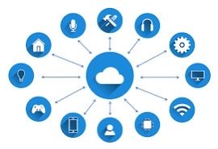

Internet das Coisas
IOT
O termo IoT, ou Internet das Coisas, refere-se à rede coletiva de dispositivos conectados e à tecnologia que facilita a comunicação entre os dispositivos e a nuvem, bem como entre os próprios dispositivos.
Graças ao advento de chips de computador baratos e telecomunicações de alta largura de banda, agora temos bilhões de dispositivos conectados à Internet.
Isso significa que dispositivos do dia a dia, como escovas de dentes, aspiradores, carros e máquinas, podem usar sensores para coletar dados e responder de forma inteligente aos usuários.
A Internet das Coisas integra “coisas” cotidianas à Internet. Engenheiros de computação vêm adicionando sensores e processadores a objetos do cotidiano desde a década de 1990.
No entanto, o progresso foi inicialmente lento porque os chips eram grandes e volumosos. Chips de computador de baixa potência chamados etiquetas RFID foram usados pela primeira vez para rastrear equipamentos caros. À medida que os dispositivos de computação diminuíram de tamanho, esses chips também se tornaram menores, mais rápidos e mais inteligentes ao longo do tempo.
COMO A IOT FUNCIONA?
Um sistema IoT tem três componentes:
Dispositivos inteligentes;
Aplicação de IoT;
Uma interface gráfica do usuário.
Imagens:
